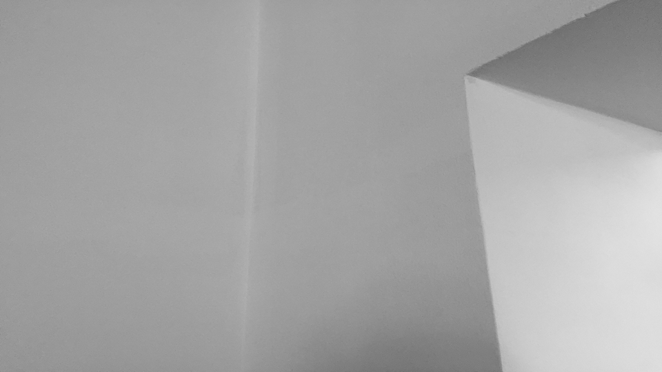
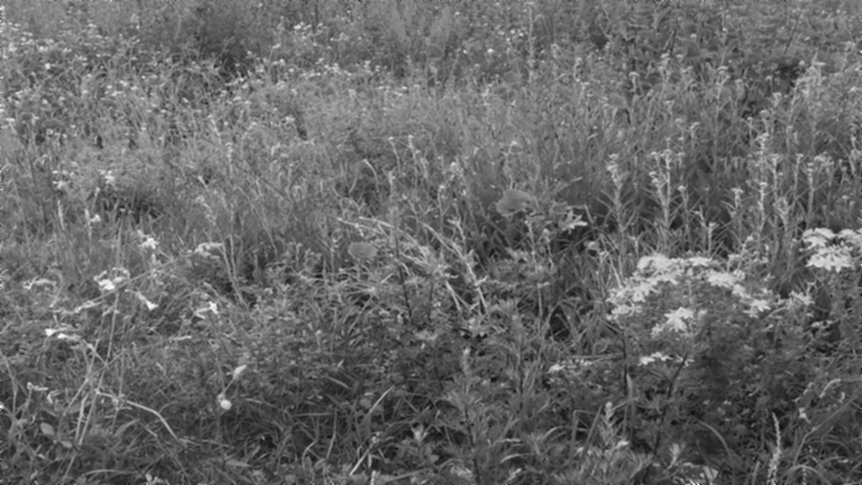
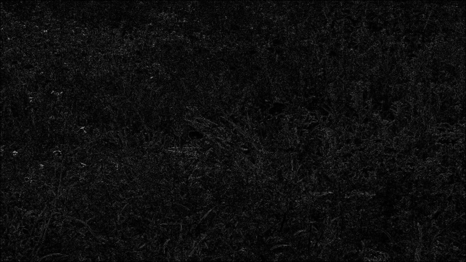
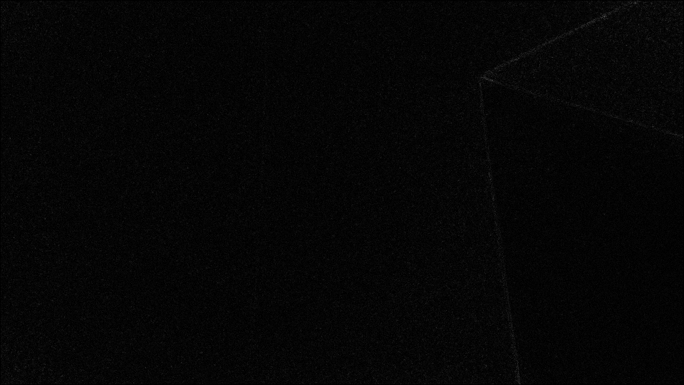
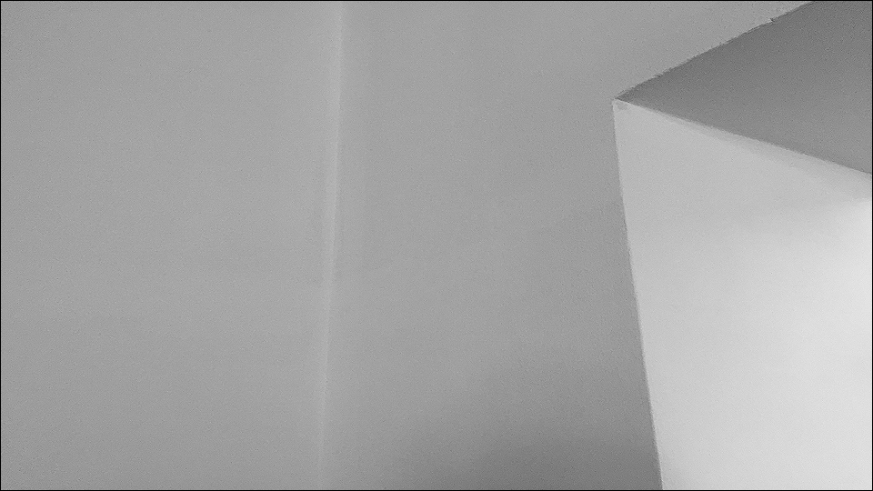
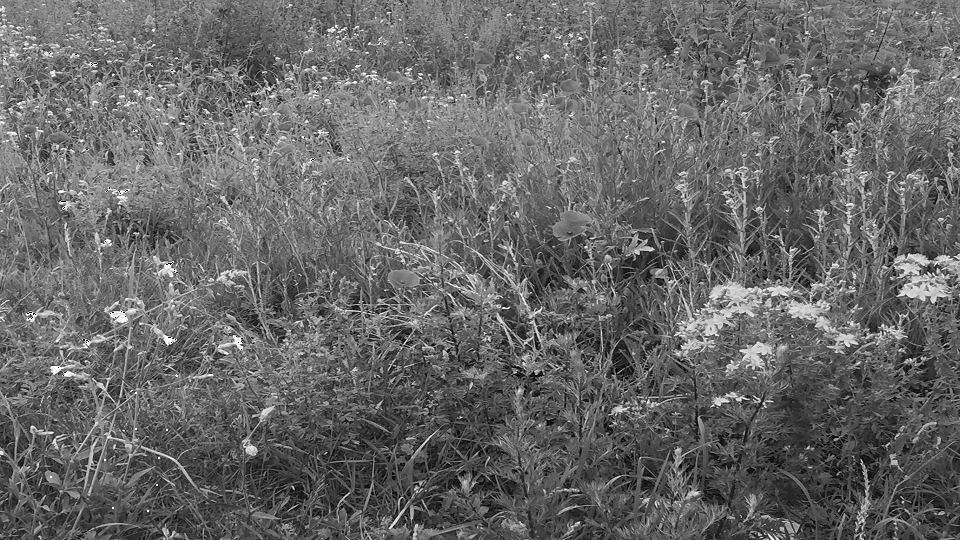
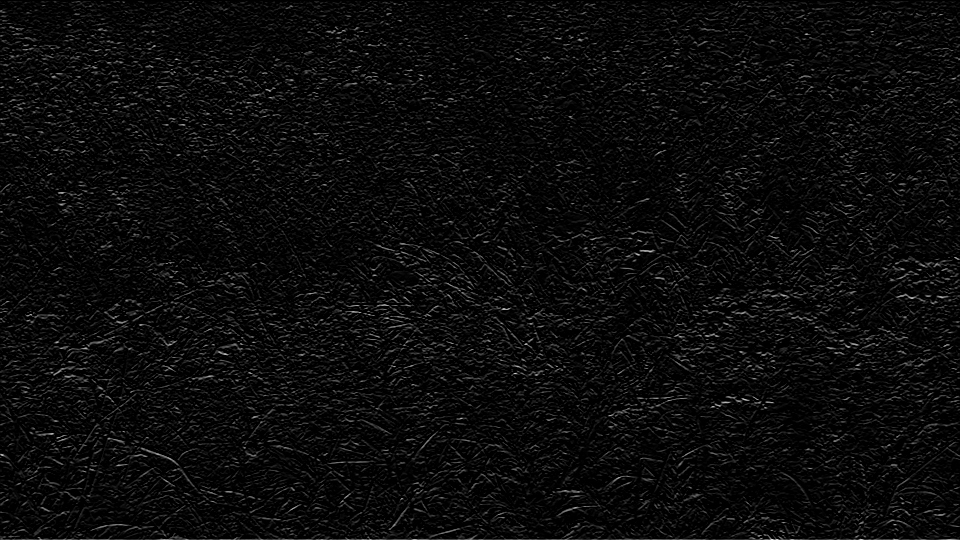
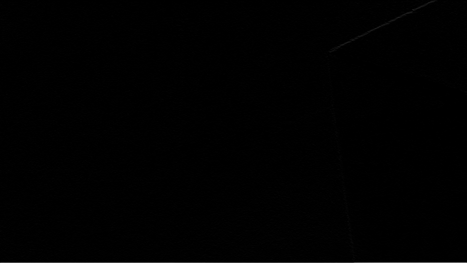
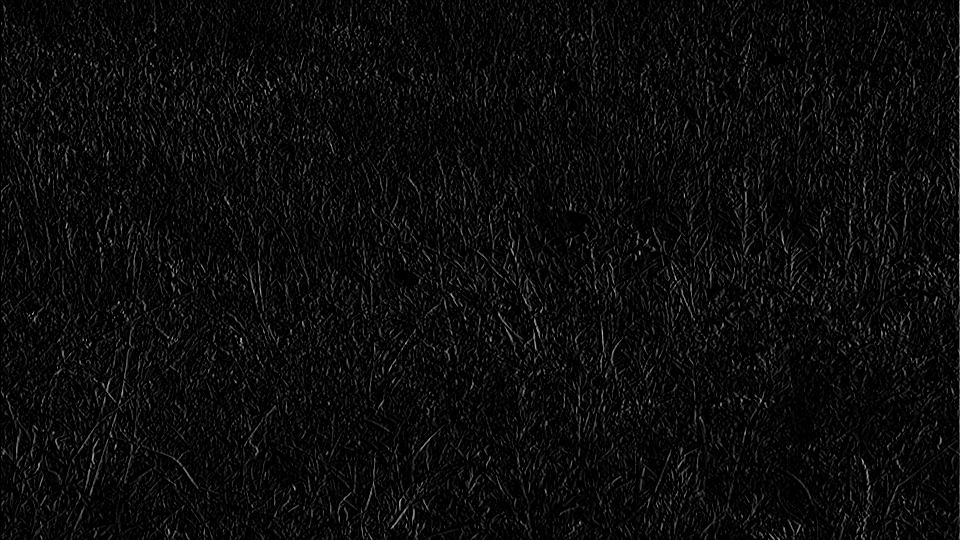
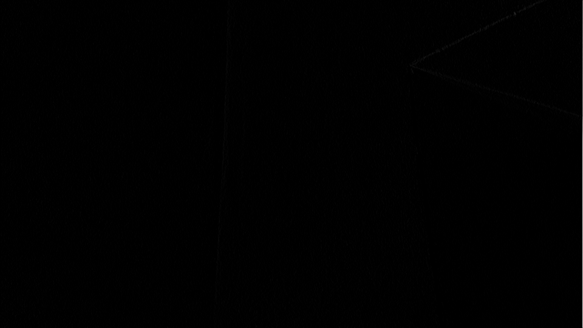

Einleitung: Nutze für die Aufgaben die neue Java bmp_io_ue6_vStud.java. Für die Übung benötigt ihr außerdem eure eigenen Bildaufnahmen (Detail und Fläche), und zwar die Graustufenversionen nach der Formel Y=0.3 x R + 0,6 x G + 0,1 x B.
a. Erweitere bmp_io so, dass ein Filter mit einem Kernel von 3x3 Pixeln angewandt werden kann. Beim Mittelwertfilter wird ein Zielpixel aus dem Mittelwert aller Pixel im Kernel im Originalbild berechnet. Beschreibe die Wirkung des Filters auf deine Bilder!
b. Wie verfährt man bei der Berechnung des Filters mit den Randpixeln?
c. Erweitere bmp_io so, dass das Differenzbild zwischen dem gefilterten und dem Originalbild berechnet werden kann (analog zu Übung 2, Aufgabenpunkt 3.3)! Dieses muss offensichtlich die Information zeigen, die das Filter entfernt hat. Beachte dabei, dass du das Differenzbild möglicherweise im Kontrast verstärken musst (siehe Übung 4).
Lösung
1a
for(int y = 1; y < bmp.image.getHeight()-1; y++) {
for(int x = 1;x < bmp.image.getWidth()-1; x++) {
int[][] kernel = new int[3][3];
//Building the pixel Kernel
for(int i = 0; i < 3; i++) {
for(int j = 0; j < 3; j++) {
int xKernel = x + (j-1);
int yKernel = y + (i-1);
if (xKernel >= 0 && yKernel >= 0) {
kernel[i][j] = bmp.image.getRgbPixel(xKernel, yKernel).b;
}
}
}
//Mittelwertberechnung
double average = 0;
int result=0;
for(int xA = 0; xA < kernel.length; xA++) {
for(int yA = 0; yA < kernel.length; yA++) {
average += kernel[xA][yA];
}
}
result = (int) (average / Math.pow(kernel.length, 2));
pc_f = new PixelColor(result, result, result);
bmp_f.image.setRgbPixel(x, y, pc_f);
}
}Originale
Mittelwertfilter
Mann kann erkennen das die Bilder erheblich an Schärfe und Helligkeit verloren haben
1b
Mittelwertberechnung: alle Randpixel haben den wert 0
1c
for(int y = 0; y < bmp.image.getHeight(); y++) {
for(int x = 0;x < bmp.image.getWidth(); x++) {
int originV = bmp.image.getRgbPixel(x, y).b;
int filterV = bmp_f.image.getRgbPixel(x, y).b;
int diff = Math.abs(originV - filterV);
pc_f = new PixelColor(diff, diff, diff);
bmp_f.image.setRgbPixel(x, y, pc_f);
}
}Differenz Bilder
 a. Wende nun den folgenden 3*3 Kernel auf deine Bilder an! Beachte dabei, dass bei der direkten Anwendung der Vorschrift Werte > 255 entstehen können. Durch welchen Wert muss also die Intensität des Zielpixels geteilt werden, damit man wieder in den erlaubten Bereich 0…255 kommt? Beschreibe die Wirkung des Filters auf deine Bilder!

b. Berechne wiederum das Differenzbild zwischen dem gefilterten und dem Originalbild! Beachte dabei ebenfalls, dass du das Differenzbild möglicherweise im Kontrast verstärken musst.
Lösung
2a
for(int y = 1; y < bmp.image.getHeight()-1; y++) {
for(int x = 1;x < bmp.image.getWidth()-1; x++) {
int[][] kernel = new int[3][3];
int[][] filterKernel = {{0, -2, 0},{-2, 12 ,-2},{0, -2, 0}};
for(int i = 0; i < 3; i++) {
for(int j = 0; j < 3; j++) {
int xKernel = x + (j-1);
int yKernel = y + (i-1);
if (xKernel <= 0 && yKernel >= 0) {
kernel[i][j] = bmp.image.getRgbPixel(xKernel, yKernel).b;
}
}
}
int[][] mulMat = new int[3][3];
int sum=0;
for (int row = 0; row < 3; row++){
for(int column = 0; column < 3; column++){
mulMat[column][row] = (kernel[column][row]*filterKernel[column][row]);
sum += mulMat[column][row]/4;
}
} if(sum < 0) { sum = 0;}
else if (sum > 255) {sum = 255;}
pc_f = new PixelColor(sum, sum, sum);
bmp_f.image.setRgbPixel(x, y, pc_f);
}
}2b
Gradientenfilter Bilder
Durch den Filter werden die Bilder deutlich schärfer und kontrastreicher.
Das Medianfilter reiht alle Pixelintensitäten im Filterkernel der Größe nach auf und gibt den Intensitätswert aus, der an der mittleren Position steht. Es wird oft zur Beseitigung von Kratzern oder punktförmigen Bildfehlern verwendet. Füge zunächst mit Paint deinem Flächenbild zehn „Fehler“ hinzu, wie es in dem folgenden Beispiel zu sehen ist. Benutze dazu einen weißen Stift mit der Strichstärke 2 Pixel. Programmiere das Medianfilter für deine 3x3-Pixelmatrix und berechne das Ergebnisbild.
Lösung
3
for(int y = 0; y < bmp.image.getHeight(); y++) {
for(int x = 0;x < bmp.image.getWidth(); x++) {
int[][] pixelkernel = new int[3][3];
for(int i = 0; i < 3; i++) {
for(int j = 0; j < 3; j++) {
int xKernel = x + (j-1);
int yKernel = y + (i-1);
if (xKernel >= 0 && yKernel >= 0 && xKernel < bmp.image.getWidth() && yKernel < bmp.image.getHeight()) {
pixelkernel[i][j] = bmp.image.getRgbPixel(xKernel, yKernel).b;
}
}
}
int[] pixelV = convert(pixelkernel);//umwandlung des 2D arrays ind ein 1D array
Arrays.sort(pixelV);
int median = pixelV[pixelV.length/2];
pc_f = new PixelColor(median, median, median);
bmp_f.image.setRgbPixel(x, y, pc_f);
}
}Bilder des beschädigten Originals
Medianfilter

Das Sobel-Filter dient der Detektion von Kanten im Bild. Programmiere ein Sobel-Filter für die x- und ein Sobel-Filter für die y-Richtung und wende sie auf deine Bilder an! Die Matrizen für das SobelFilter finden sich im pdf zur Bildfilterung.
Lösung
4
for(int y = 0; y < bmp.image.getHeight(); y++) {
for(int x = 0;x < bmp.image.getWidth(); x++) {
int[][] kernel = new int[3][3];
int[][] filterkernel = {{1, 2, 1},{0, 0 ,0},{-1, -2, -1}};//Horizontal
int[][] filterkernel = {{1, 0, -1},{2, 0 ,-2},{1, 0, -1}};//Vertikal
for(int i = 0; i < 3; i++) {
for(int j = 0; j < 3; j++) {
int xKernel = x + (j-1);
int yKernel = y + (i-1);
if (xKernel >= 0 && yKernel >= 0 && xKernel < bmp.image.getWidth() && yKernel < bmp.image.getHeight()) {
kernel[i][j] = bmp.image.getRgbPixel(xKernel, yKernel).b;
}
}
}
int[][] mulMat = new int[3][3];
int sum=0;
for (int row = 0; row < 3; row++){
for(int column = 0; column < 3; column++){
mulMat[column][row] = (kernel[column][row]*filterkernel[column][row]);
sum += mulMat[column][row]/4;
}
}
if(sum < 0) { sum = 0;}
else if (sum > 255) {sum = 255;}
pc_f = new PixelColor(sum, sum, sum);
bmp_f.image.setRgbPixel(x, y, pc_f);
}
}Bilder Horizontal
 Bilder Vertikal
 